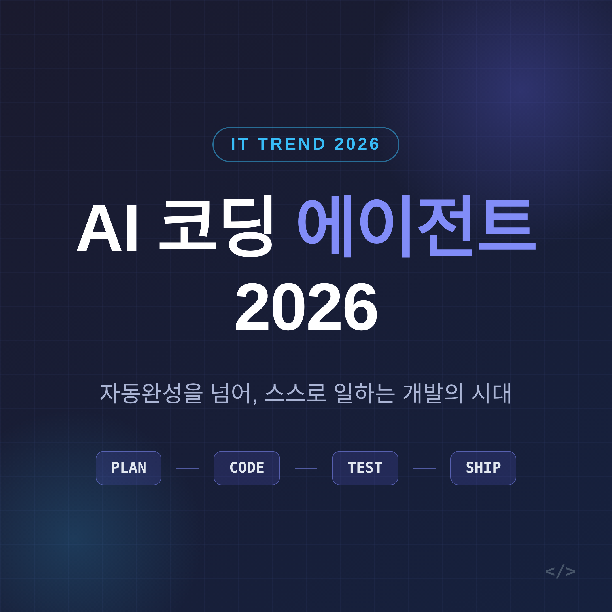
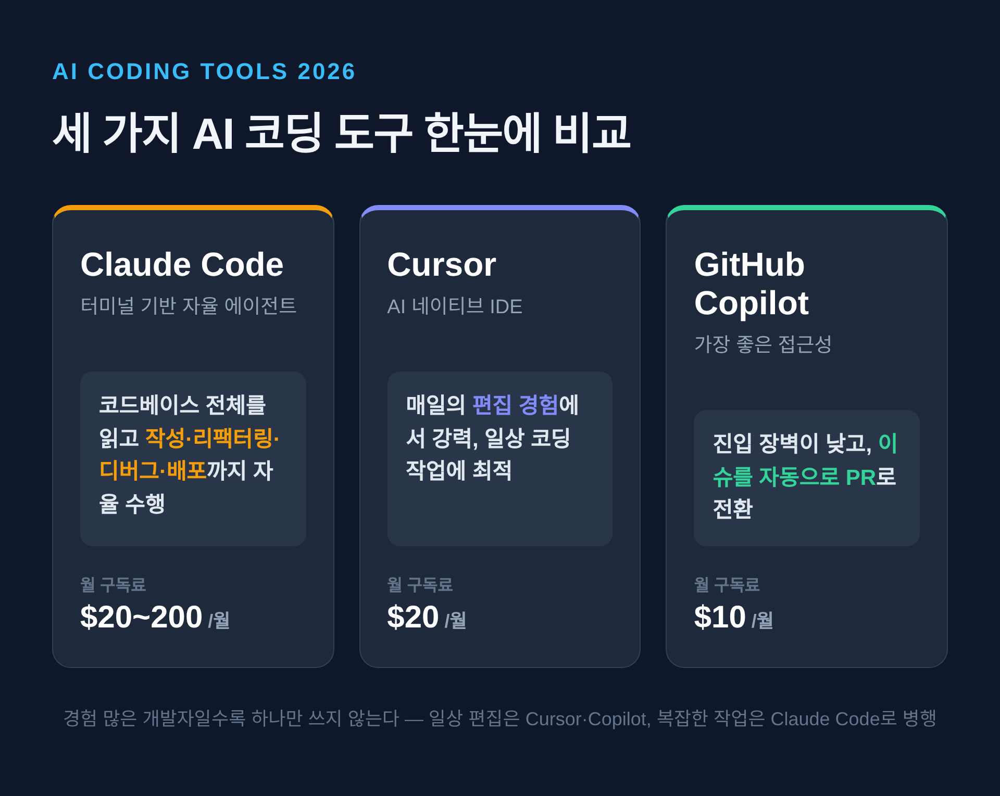
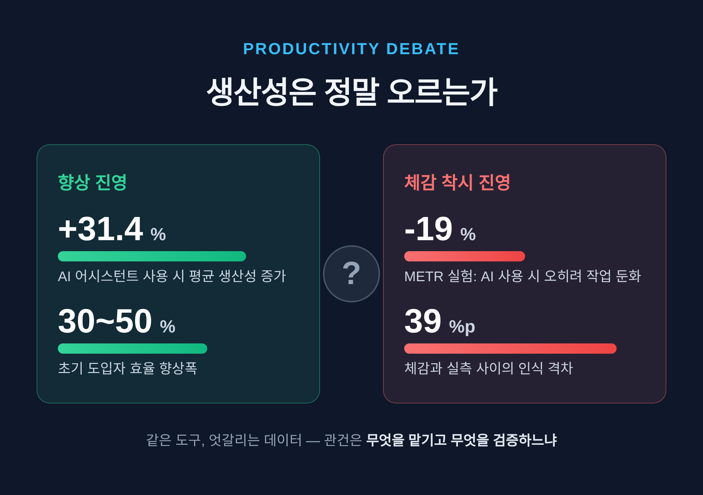

[IT] AI 코딩 에이전트, 2026년 개발 현장을 어떻게 바꾸고 있나
이번 글에서는 2026년의 AI 코딩 에이전트가 실제 개발 현장을 어떻게 바꾸고 있는지 정리해 보겠습니다. 결론부터 말씀드리면 세 가지입니다. 첫째, 도구는 자동완성에서 스스로 일하는 에이전트로 넘어갔습니다. 둘째, 생산성은 분명히 오른다는 보고와 그렇지 않다는 데이터가 함께 있습니다. 셋째, 가장 큰 과제는 일자리 소멸이 아니라 보안과 기술부채입니다.

자동완성에서 '에이전트 팀'으로
2026년의 가장 큰 변화는 한 문장으로 요약됩니다.
"코드를 도와주던 AI가, 이제는 스스로 일을 맡아 한다."
예전의 AI는 다음 줄을 추천하는 자동완성 도구였습니다. 지금은 다릅니다. 스스로 계획을 세우고, 코드를 실행하고, 테스트하고, 고칩니다. 사람의 개입은 눈에 띄게 줄었습니다.
Anthropic의 「2026 Agentic Coding Trends Report」는 올해를 단일 에이전트에서 멀티 에이전트로 넘어가는 해로 규정합니다. 하나의 오케스트레이터가 문제를 잘게 나누고, 전문화된 에이전트들이 각 부분을 처리한 뒤 결과를 모으는 방식입니다. Gartner는 2026년 말까지 기업 AI 도입의 60%가 이런 에이전트 역량을 포함하리라 내다봤습니다.
도구 지형도 어느 정도 정리됐습니다.
- Claude Code — 터미널 기반 에이전트입니다. 코드베이스 전체를 읽고 작성·리팩터링·디버그·배포까지 자율로 수행합니다. 가격은 월 20~200달러.
- Cursor — AI 네이티브 IDE입니다. 월 20달러, 매일의 편집 경험에서 강합니다.
- GitHub Copilot — 월 10달러로 접근성이 가장 좋고, 이슈를 자동으로 PR로 바꿔 줍니다.
흥미로운 점은 경험 많은 개발자일수록 하나만 쓰지 않는다는 것입니다. 일상 편집은 Cursor나 Copilot으로, 복잡한 작업은 Claude Code로 — 이렇게 둘 이상을 병행하는 패턴이 자리 잡았습니다.

이 모든 걸 잇는 배관, MCP
에이전트가 혼자 똑똑해진다고 일이 되는 건 아닙니다. 외부 도구와 데이터에 연결돼야 비로소 쓸모가 생깁니다. 그 연결의 표준이 MCP(Model Context Protocol)입니다.
올해 들어 MCP는 틈새 프로토콜에서 주류 인프라로 올라섰습니다. 2025년 12월 기준 공개 MCP 서버는 1만 개를 넘겼습니다. ChatGPT, Cursor, Gemini, Microsoft Copilot, VS Code 등 주요 제품에 폭넓게 채택됐고, Python·TypeScript SDK는 합쳐 월 9,700만 회 넘게 내려받고 있습니다.
눈에 잘 띄지 않는 변화입니다만, 에이전트 생태계의 바닥을 받치는 배관이 깔린 셈입니다.
생산성은 정말 오르는가
가장 뜨거운 질문입니다. 그리고 가장 답이 엇갈리는 질문이기도 합니다.
오른다는 쪽의 수치는 풍성합니다. AI 코딩 어시스턴트를 쓰는 개발자의 생산성이 평균 31.4% 늘었다는 보고가 있습니다. 초기 도입자 기준으로는 30~50% 효율 향상이 도입을 이끌었습니다. 기업 사례도 구체적입니다.
- TELUS — 코드 출시를 30% 앞당기고 50만 시간 이상을 절감했습니다.
- CRED — 실행 속도가 2배가 됐습니다.
- Rakuten — Claude Code가 1,250만 줄 코드베이스에서 7시간을 자율 실행했고, 그동안 사람의 코드 기여는 0이었습니다. 수치 정확도는 99.9%로 보고됐습니다.
여기까지만 보면 답은 명쾌해 보입니다. 그런데 반대편 데이터가 만만치 않습니다.
METR의 무작위 대조 시험이 대표적입니다. 5년 이상 경력의 오픈소스 개발자 16명에게 246개 실제 과제를 맡겼더니, AI를 쓸 때 오히려 작업이 19% 더 오래 걸렸습니다. 더 흥미로운 건 인식의 간극입니다. 개발자들은 사전엔 24% 빨라지리라 기대했고, 실측 뒤에도 20% 빨라졌다고 믿었습니다. 체감과 현실 사이에 39%포인트의 격차가 있었던 셈입니다.
다만 이 결과 하나로 단정해서는 안 됩니다. METR은 2026년 2월, 실험 설계의 한계를 스스로 인정했습니다. AI로 가장 이득을 보는 개발자들이 'AI 없이' 진행하는 실험을 거부했다는 것입니다. 지금은 방법론을 손보는 중입니다.
새로 떠오른 병목도 있습니다. AI가 코드 쓰는 속도는 끌어올렸지만, 그만큼 리뷰가 밀립니다. 도입률이 높은 팀에서 리뷰 시간이 91% 늘었다는 보고가 그것입니다. 짜는 일은 빨라졌는데, 검토하는 일이 따라가지 못하는 풍경입니다.

일자리는 사라지는가, 바뀌는가
소멸론부터 짚겠습니다. 데이터는 "개발자 일자리가 사라진다"보다 "역할이 바뀐다"를 가리킵니다.
전체 수요는 줄지 않았습니다. Indeed 기준 소프트웨어 엔지니어 채용 공고는 2026년 초에도 연 11% 늘었습니다. 자율 도구가 퍼지는 와중에도 그렇습니다. CNN Business는 "소프트웨어 엔지니어링 일자리의 종말은 크게 과장됐다"고 했고, Stack Overflow는 "코드 수요는 무한하다"고 잘라 말했습니다.
대신 일의 결이 달라집니다. 개발자는 루틴한 코딩을 덜 하고, AI 에이전트 무리를 감독하며 구조 설계와 아이디어에 더 많은 시간을 씁니다. 한 전망은 2026년까지 엔지니어의 90%가 직접 코딩에서 'AI 프로세스 오케스트레이션'으로 이동하리라 봤습니다.
다만 밝기만 한 그림은 아닙니다. 주니어 계층은 뚜렷한 역풍을 맞고 있습니다.
- 22~25세 개발자 고용은 2022년 이후 약 20% 줄었습니다.
- 주니어의 61%가 지금 구직 시장이 어렵다고 답했습니다. 시니어는 34%였습니다.
- AI 코딩 도구 경험을 요구하는 공고는 1년 새 340% 늘었지만, 순수 구현 역할 공고는 17% 줄었습니다.
정리하면 양극화입니다. 전체 수요는 유지되거나 늘지만, 입구에 선 주니어와 단순 구현직은 좁아지고, 오케스트레이션·아키텍처·전문직은 넓어집니다.
한 가지 숫자가 이 전환의 현주소를 잘 보여줍니다. 이른바 '위임 격차'입니다. 개발자는 업무의 약 60%에 AI를 쓰지만, 완전히 맡길 수 있는 작업은 0~20%에 그친다고 보고됐습니다. 많이 쓰되, 아직은 끝까지 맡기지 못하는 단계인 것입니다.
진짜 위험은 따로 있다 — 보안과 기술부채
생산성 이야기의 그늘에는 더 묵직한 경고가 있습니다. 빠르게 쌓이는 보안 취약점과 기술부채입니다.
수치는 소스마다 편차가 큽니다만, 방향은 한결같습니다. AI가 생성한 코드의 25%가 확인된 보안 취약점을 포함한다는 좁은 추정이 있고, 넓게 잡으면 40~62%가 취약점 또는 설계 결함을 안고 있다는 보고도 있습니다. AI 보조 커밋의 시크릿 유출률은 3.2%로, 일반 공개 커밋의 기준선 1.5%의 약 두 배였습니다.
기술부채 쪽도 가볍지 않습니다. 기술 리더의 약 75%가 빠른 AI 보조 개발 관행 탓에 2026년까지 중간~심각 수준의 기술부채를 예상했습니다. 한 대규모 실증 연구는 AI가 들여온 미해결 이슈 누적치가 2026년 2월까지 11만 건을 넘겼다고 집계했습니다.
신뢰의 문제도 남습니다. 개발자의 66%가 가장 큰 불만으로 꼽은 것은 "거의 맞지만, 정확히는 아닌" 결과였습니다. 도입률은 84%까지 올랐지만 신뢰는 29%에 머문다는 통계도 있습니다.
그렇다고 AI가 위험의 원천이기만 한 것은 아닙니다. 여기서 균형을 잡아야 합니다.
null 참조 예외, off-by-one 오류, 누락된 에러 처리 같은 특정 버그는 AI 에이전트가 사람보다 빠르고 안정적으로 잡아냅니다. 게다가 과거엔 전문가가 필요했던 보안 리뷰나 모니터링을, 이제는 어떤 엔지니어든 AI의 도움으로 수행할 수 있습니다. AI는 리스크를 만들기도 하고, 동시에 그 리스크를 줄이는 수단이기도 합니다. 양면을 함께 봐야 공정합니다.
정리하면 이렇습니다. 2026년의 AI 코딩 에이전트는 단순한 생산성 도구가 아니라, '위임과 검증'이라는 새로운 일하는 방식 그 자체입니다. 도구는 빨라졌지만, 무엇을 맡기고 무엇을 직접 확인할지 가르는 판단은 여전히 사람의 몫으로 남았습니다.
그래서 핵심은 한 곳으로 모입니다 — 결국 남는 경쟁력은 잘 짜는 손이 아니라, 잘 맡기고 잘 검토하는 눈입니다.
AI 에이전트에게 일을 넘길 수 있는 시대가 왔습니다. 그 코드를 끝까지 책임질 사람도, 여전히 당신이라는 사실은 변하지 않았습니다.